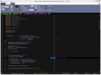

BowPad
BowPad is a small and fast text editor with a ribbon user interface and syntax highlighting.
{kind=link}
{kind=link}
A few notable features of BowPad:
- syntax highlighting for over 100 file types and languages
- handling of many different encodings, including utf8, utf16 and even utf32
- easy ribbon user interface
- navigation hints in the vertical scrollbar
- coloring of open tabs according to their path
And before you ask: the name BowPad comes from the fact that it uses
the ribbon user interface.
Ribbon → Bow, Editor → NotePad = BowPad.
And of course we all know that Bowties are cool!.
Download
The latest version of BowPad is available from here.
If there is a new version available, BowPad will notify you and offer to
download and install it for you.
Windows 7 required
BowPad requires Windows 7 or later. It won't work on Windows XP!
Or if you're using Vista, you have to install the
Platform Update for Windows Vista.
Source code
BowPad is licensed under the GPL.The source code is available from the project page here.
Report bugs, ask for new features
In case you encounter a bug or you have a feature request, please create a new entry in our issue tracker. But please first do a search there on all issues (not just the new ones) to make sure your issue isn't already reported and/or fixed.
Translations
BowPad can show the UI in various languages, but if your language of choice is not available, you can help creating it. You can find out how here.